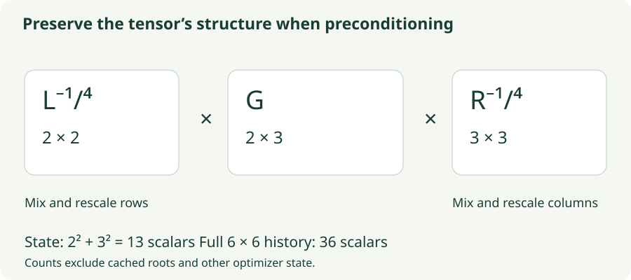

Shampoo: Preconditioning Rows and Columns
Derive matrix preconditioners, understand inverse fourth roots, and inspect their memory and computation.
A diagonal optimizer can make one coordinate’s step smaller than another’s, but it cannot generally mix them. A full preconditioner can mix every parameter with every other one, at a prohibitive storage cost. Shampoo takes advantage of a tensor’s shape: for a matrix, it stores one history for row interactions and another for column interactions.
The result is more expressive than independent coordinate scales, while remaining much smaller than a preconditioner over every flattened parameter pair. The price is matrix state, matrix powers, and implementation choices that must be made explicit.
1. What the two matrix histories contain
Let $W\in\mathbb R^{r\times c}$ be a weight matrix and $G_t$ its gradient. The original cumulative matrix version starts with $L_0=\delta I_r$ and $R_0=\delta I_c$, where $\delta>0$ provides damping:
The entry $(G_tG_t^\top)_{ab}=\sum_jG_{t,aj}G_{t,bj}$ is the dot product between gradient rows $a$ and $b$. Its diagonal measures a row’s squared norm; its off-diagonal entries measure how rows align. Similarly, $G_t^\top G_t$ compares columns.
For a concrete gradient $G=\left[\begin{smallmatrix}1&2\\3&4\end{smallmatrix}\right]$, the row product is $GG^\top=\left[\begin{smallmatrix}5&11\\11&25\end{smallmatrix}\right]$. The 11 comes from $1(3)+2(4)$: the first and second rows are strongly aligned. The column product is $G^\top G=\left[\begin{smallmatrix}10&14\\14&20\end{smallmatrix}\right]$. These are gradient second-moment summaries, not the Hessian of the training loss.
2. Precondition from both sides
Shampoo applies
Left multiplication mixes and rescales rows. Right multiplication mixes and rescales columns. These are matrix powers and matrix products, not element-wise inverse fourth roots.
For a symmetric positive-definite matrix $L=Q\Lambda Q^\top$, define $L^{-1/4}=Q\Lambda^{-1/4}Q^\top$. First express a vector in the eigenbasis, then scale each component by the inverse fourth root of its eigenvalue, then return to the original basis. Large accumulated-gradient directions are damped more strongly.

3. Why a fourth root on each side?
A useful sanity check is the one-coordinate case. Suppose the same scalar history $S=\delta+\sum_k g_k^2$ appears on the left and right. The update becomes $S^{-1/4}gS^{-1/4}=g/\sqrt S$. The two quarter powers combine into the familiar inverse-square-root scale.
If we used an inverse square root on both sides instead, that scalar update would become $g/S$: a different dependence on accumulated gradient magnitude. Likewise, with repeated gradients and negligible damping, each matrix history grows proportionally to $t$. Two factors of $t^{-1/4}$ yield a combined $t^{-1/2}$ scale.
This scalar check motivates the exponents; it is not a full derivation of Shampoo’s matrix guarantees. The original analysis justifies a structured preconditioner through matrix inequalities. For column-wise vectorization, the update can be written
The Kronecker product notation describes the implicit large transform. An implementation need not construct it. It is a structured alternative to full-matrix adaptation, not an exact equality between $R\otimes L$ and the complete gradient covariance in general.
4. Calculate a complete diagonal case
Use the first gradient $G_1=\operatorname{diag}(4,1)$ and temporarily neglect damping. Then $L_1=R_1=\operatorname{diag}(16,1)$, so both inverse fourth roots are $\operatorname{diag}(1/2,1)$.
At rate $\eta=0.1$, subtract 0.1 from each diagonal parameter and leave off-diagonal entries unchanged. The first direction agrees with the ideal polar direction from Muon in this special undamped, single-gradient case.
If the same gradient appears again, both histories double. Each root contributes an extra factor $2^{-1/4}$, so $P_2=I/\sqrt2$. Muon’s ideal polar transform of the same direction remains $I$. Shampoo remembers accumulated magnitude; polar normalization discards the input’s singular magnitudes. The methods are related, but their histories make them different.
5. Lab: watch the histories accumulate
The supplied gradients have singular values 4 and 1, a right rotation of −20°, and initially a left rotation of 20°. In the rotating scenario, the left rotation changes to 70° after step 5. This separates a change of direction from a change of singular magnitude.
Row and column preconditioning
Inspect $L$, $R$, their eigenvalues, and the computed direction. The diagonal Adagrad panel uses the same supplied history and damping but stores squared entries independently.
- Repeat the same matrix: its histories grow and its preconditioned direction shrinks. This is the cumulative version, not an exponential moving average.
- Rotate after step 5: the row history changes orientation while the column Gram contribution stays the same. Verify that distinction in the displayed matrices.
- Refresh every five steps: histories still update every step, but the expensive roots are reused. The roots refresh at steps 1, 6, 11, and 16 in this demo.
- Increase damping: weak accumulated directions become less aggressively scaled. The effect is especially visible early in the run.
6. What structure saves—and what it still costs
There are $rc$ parameters. A full flattened preconditioner stores $(rc)^2$ scalars. The two Shampoo histories store $r^2+c^2$, excluding cached roots, gradients, momentum, and other training state. This is a major reduction from the full matrix, but it is not always smaller than diagonal adaptation.
For a 1024×4096 weight matrix, the histories alone contain 17,825,792 scalars, about 68 MiB in float32. Adam’s two moments for that matrix contain 8,388,608 scalars, about 32 MiB. Cached Shampoo roots can add another similarly sized pair of matrices. This concrete accounting is more useful than simply calling the optimizer “memory efficient.”
Dense eigendecompositions scale roughly as $O(r^3+c^3)$. Applying the two factors costs matrix multiplications of order $O(r^2c+rc^2)$. Blocking large dimensions, distributing state, and refreshing roots less often can make training practical, but they also change the approximation or update timing.
7. Practical variants must be named
Modern implementations often use exponential averages, momentum, damping rules, delayed preconditioning, and grafting. Grafting keeps a Shampoo-like direction but gives it a step norm taken from a simpler optimizer. For example, scaling $P$ by $\|A\|_F/(\|P\|_F+\epsilon)$ borrows a reference update $A$’s magnitude.
That operation changes the role of the raw inverse roots in determining step size. Likewise, a variant with inverse square roots on both sides is not the original inverse-fourth-root update. Record the exponent, state averaging, normalization, and refresh schedule when comparing results. The Distributed Shampoo implementation documents practical engineering choices.
# Original cumulative matrix rule, refreshed every step.
# L starts at delta * I_rows; R starts at delta * I_columns.
L += grad @ grad.T
R += grad.T @ grad
left = symmetric_matrix_power(L, -0.25)
right = symmetric_matrix_power(R, -0.25)
parameter -= lr * (left @ grad @ right)The matrix-power routine must handle numerical symmetry, positive eigenvalues, and the chosen damping convention. Adding $\delta I$ means shifting eigenvalues once in the initial state here; adding damping repeatedly would be a different accumulation rule. These details matter especially when gradients are low rank.
8. Questions worth answering
No. It stores structured row and column summaries. Their combined action captures useful coupling but cannot represent every possible full preconditioner over flattened entries.
If $G'=UG$ for orthogonal $U$, then $G'^\top G'=G^\top U^\top UG=G^\top G$. The row product transforms as $UGG^\top U^\top$, so its orientation changes.
Not here. Shampoo uses second-moment gradient statistics to precondition first derivatives. Its matrix state is not the actual loss Hessian.
Sources
Gupta, Koren, and Singer, Shampoo: Preconditioned Stochastic Tensor Optimization; Distributed Shampoo implementation paper; reference engineering implementation. The arithmetic examples, memory calculation, and supplied-matrix lab are constructed for these notes.